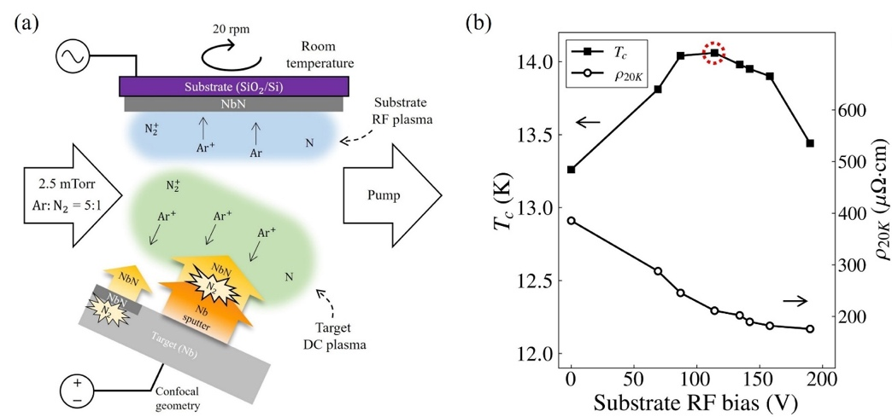

Abstract
- 1Department of Quantum Information Engineering, Sungkyunkwan University, Suwon 16419, Korea
- 2SKKU Advanced Institute of Nano Technology (SAINT), Sungkyunkwan University, Suwon 16419, Korea
- 3Department of Nano Engineering, Sungkyunkwan University, Suwon 16419, Korea
Niobium nitride (NbN) is a widely used material in superconducting quantum devices, such as superconducting nanowire single-photon detectors (SNSPDs) and superconducting qubits, with the film thickness varied to each application. However, the properties of NbN films depend strongly on deposition conditions, making systematic process optimization essential. In this work, we report the optimization of deposition parameters for NbN films grown by RF-biased reactive DC magnetron sputtering. The target discharge current and substrate RF bias were tuned using the superconducting critical temperature Tc as the figure of merit. To optimize film quality, we analyzed how superconductivity correlates with film properties, including crystal structure and resistivity. With the optimized conditions, a nanobridge SNSPD fabricated from the ultrathin film exhibited internal detection efficiency saturation, suggesting the applicability of the proposed optimization workflow to superconducting devices.

- S. Miki et al., Electron. Commun. Jpn. 85, 77–80, (2002)
- A. Dane et al., Appl. Phys. Lett. 111, 122601 (2017)